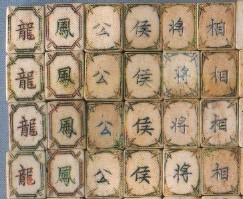
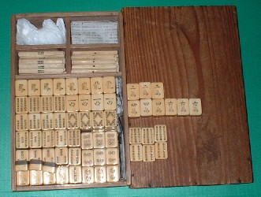
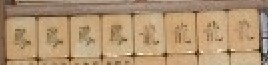
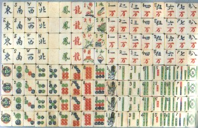

三元牌といえば   、しかし麻雀が成立した19世紀後半には、まだ は登場していなかった。現在、確認されている1865年製の麻雀牌のに相当する牌は「晩」、に相当する牌は「涼」である。しかしこの「晩涼」牌は、現在１セットしか確認されていないので、当時も少量しか製造されなかったと思われる。 、しかし麻雀が成立した19世紀後半には、まだ は登場していなかった。現在、確認されている1865年製の麻雀牌のに相当する牌は「晩」、に相当する牌は「涼」である。しかしこの「晩涼」牌は、現在１セットしか確認されていないので、当時も少量しか製造されなかったと思われる。
さすがの麻雀博物館も、（現時点では）「晩涼牌」は所蔵していない。そして先般、幻の魚１索が発見された。そこで幻牌として次の狙い目は、「晩涼牌」。その麻雀初期の頃、三元牌として主流であったと思われるのが、この龍鳳牌（ロンフォンパイ）。
もっとも初期の形がこの牌↓。 まだ の風牌がなく、代わりに公侯将相（こうこうしょうそう）という牌が入っている。そこで下記の牌は公侯将相牌と通称されている。 の風牌がなく、代わりに公侯将相（こうこうしょうそう）という牌が入っている。そこで下記の牌は公侯将相牌と通称されている。

龍が皇帝、鳳は皇后（“ 龍鳳 ”ではなく“ 鳳凰 ”と表現した場合は、鳳が皇帝 凰が皇后）。公は皇族クラス、侯は大臣クラス、将は将軍、相は宰相クラスを表す。龍が皇帝、鳳が皇后であるから、中国では結婚式を龍鳳配（ロンフォンペイ＝龍と鳳の配偶）と表現するとも聞く（配（ペイ）は（bai＝パイと音通））。
そんな龍鳳牌の普及タイプが、これ。↓1925年頃に上海あたりで製造された。杉箱入りであるし彩色が褪せているので骨董的価値は低いが、資料的価値は高い。

この写真では分かりにくいので、拡大したのが次の写真。見たとおり、三元牌が はではなく龍鳳となっている（ は現在と同じ）。

麻雀博物館は、彩色が褪せていない龍鳳牌を所蔵している。とうぜん博物館の牌のほうが骨董的価値が高い。しかし博物館とσ(-_-)では、パワーが違う....(ノд｀)
博物館所有の龍鳳牌↓

|